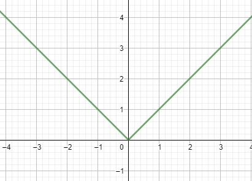

Differentiable and/or Continuous
The concepts of differentiabile and continous functions are easily confused when studied for the first time. A common misconception is that all continuous functions are differentiable and vice versa.
But this is completely false! The relationship between continuous and differentiable functions is more subtle than that.
First of all, it is true and very easy to prove that all differentiable functions are automatically continuous (proof). But although many people believe that a function being continuous implies it most be differentiable, this is not true. An easy example of a function that is continuous but not differentiable everywhere is the absolute value function, which is graphed here:

Absolute value
It is easy to see that this function is continuous everywhere, but it is not differentiable at \(x = 0\). At this point, the function has a spike, so there is no good definition for the tangent line, which makes it impossible to define a derivative.
Weierstrass Function
The Weierstrass function is an incredible example of a function that is continuous everywhere but nowhere differentiable! Basically, the function is defined in such a way that it has spikes everywhere, so it will be continuous everywhere but still not differentiable anywhere.
To see the function, use the following program. The function has a parameter called \(b\), as you increase this value, the function develops more spikes. For high values of \( b\), the function has so many spikes that it is not differentiable anywhere.
Of course the image is not a completely reliable graph of the function, because we can only graph with a finite set of points. However, you can still see that the graph develops so many peaks that it is never differentiable while still being continuous everywhere.
The definition of the Weierstrass function and the proof that it is truly nowhere differentiable is a little complicated. But that is beyond the point, the important thing is that we can create a continuous function that is nowhere differentiable, which is a very counterintuitive fact.